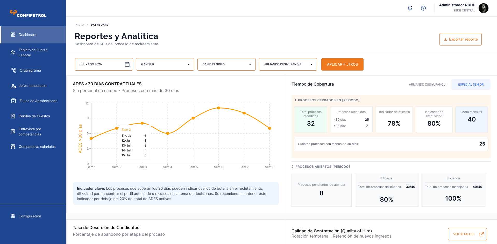
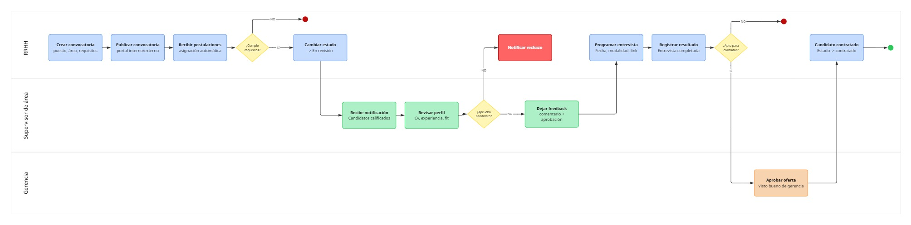

De Excel a plataforma de reclutamiento enterprise
Diseño de un sistema integral de gestión de candidatos para una empresa minera que procesaba más de 500 postulaciones mensuales usando hojas de cálculo compartidas.
Un proceso de 500 postulaciones gestionado en un Excel compartido.
El equipo de Recursos Humanos de Confipetrol gestionaba sus convocatorias de personal mediante hojas de cálculo compartidas en Google Drive. Con más de 500 postulaciones mensuales, este sistema presentaba problemas críticos de trazabilidad, duplicación de datos y pérdida de candidatos calificados.
El proceso involucraba a 3 equipos distintos (RRHH, supervisores de operaciones y gerencia) que trabajaban en archivos distintos sin visibilidad cruzada, lo que generaba decisiones inconsistentes y demoras de hasta 3 semanas en cubrir una vacante.
Tres perfiles, tres necesidades distintas.
María Quispe
"Necesito saber en qué etapa está cada candidato sin tener que preguntarle a todo el mundo."
- Pierde tiempo actualizando el Excel manualmente
- No recibe notificaciones cuando un supervisor evalúa
- Candidatos duplicados en diferentes hojas
- Centralizar todas las postulaciones en un solo lugar
- Reducir el tiempo de seguimiento
- Reportar avance a gerencia sin preparar informes
Roberto Vargas
"Solo quiero revisar los CVs que me corresponden y dar mi visto bueno, sin entrar a sistemas complicados."
- Le llegan archivos por WhatsApp para aprobar
- No sabe cuáles candidatos ya evaluó
- Poca familiaridad con herramientas digitales
- Revisar perfiles en pocos clics
- Aprobar o rechazar con comentario simple
- No tener que recordar qué ya vio
Luis Palomino
"Necesito ver el estado de las contrataciones críticas sin tener que pedir un reporte cada vez."
- Solo se entera del avance en reuniones semanales
- No tiene datos concretos para tomar decisiones
- Dashboard de KPIs de reclutamiento en tiempo real
- Alertas de vacantes críticas sin cubrir
Una plataforma con tres vistas, un solo flujo.
Diseñé un sistema modular con roles diferenciados: RRHH gestiona el proceso completo, supervisores solo ven lo que les corresponde aprobar, y gerencia accede a un dashboard de métricas en tiempo real. Todo en una sola interfaz con navegación simplificada.

Vista principal del pipeline de candidatos para el rol de Analista RRHH

Perfil unificado del candidato con historial

Vista de métricas para gerencia
Fundamentos visuales del sistema.
El flujo del proceso de selección de punta a punta.
Mapeé el flujo completo desde que RRHH crea una convocatoria hasta que el candidato es contratado, incluyendo los puntos de decisión de cada rol involucrado.

Flujo completo: desde la creación de convocatoria hasta la contratación del candidato